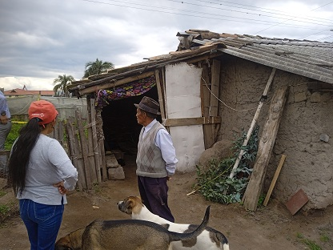
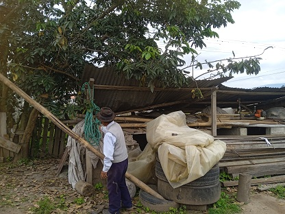
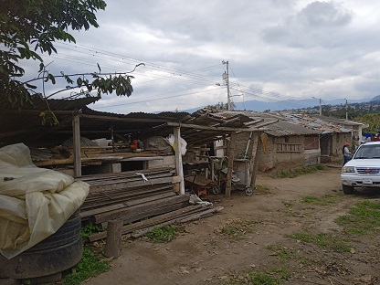
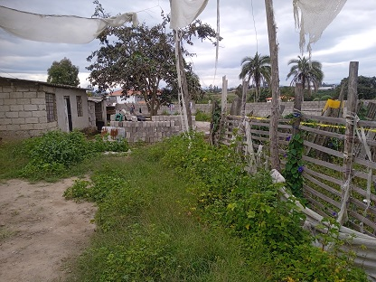
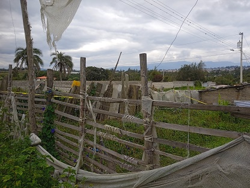
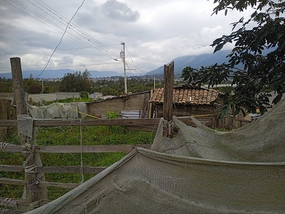
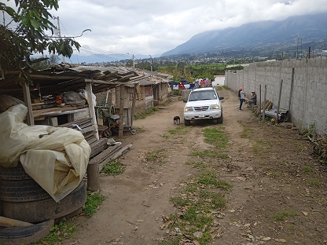
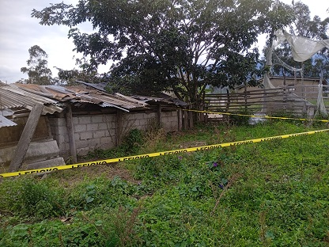

Terreno - EC-RJ-154246
EC-RJ-154246 · terreno · ANTONIO ANTE, Imbabura
★ Oferta destacada









Datos del remate
| Avalúo pericial | $4,862 |
| Tipo de bien | terreno |
| Área de terreno | 240.38 m² |
| Cantón / Provincia | ANTONIO ANTE, Imbabura |
| Dirección / Sector | ontañon |
| Señalamiento | Primer Señalamiento |
| Fecha de remate | 2026-08-14 |
| No. de proceso | 10309202200199 |
Análisis vs. mercado
| Avalúo por m² | $20/m² |
| Mediana de mercado en la zona | $47/m² |
| Descuento vs. mercado | 57.0% |
| Comparables usados | 18 |
| Radio de búsqueda | 800 m |
| Puntaje | 92/100 |
Descripción completa del avalúo
3.características del predio para su inventario y avaluó: lote nº1, predio con pendiente en un 5% sentido este - oeste, predio de forma regular, con un área de terreno de 240,38m² según catastro real, se considera los mismos datos del certificado ya que las dimensiones y áreas han variado es decir la valoración será en base a los 221,00m² ya que el predio es resultado de un proceso de fraccionamiento, aprobado por el gad de antonio ante, al momento de la inspección no se observa que existen construcciones a tomar en cuenta por su estado, ni cerramientos que delimiten la propiedad solo cercos vivos y alambrado de púa en partes, predio ubicado en un sector rural, zona residencial – agrícola de baja plusvalía, predio no delimitado en todos sus lados, existen cerramientos parciales que subdividen la propiedad actualmente.
Análisis de inversión (IA)
⚠ Dudosa — revisar bienEl descuento del 57% frente a la mediana del mercado con 18 comparables es llamativo, pero la descripción revela inconsistencias importantes: el avalúo se basa en 221 m² cuando el área catastral es 240.38 m², y el predio no está delimitado en todos sus lados, lo que genera dudas sobre la posesión real y los linderos. La zona rural de baja plusvalía limita el potencial de valorización, y el origen en un fraccionamiento merece revisión documental antes de cualquier compromiso.
A favor:
- Descuento significativo del 57% respecto a la mediana de mercado, calculado con una muestra razonablemente amplia de 18 comparables
- El fraccionamiento fue aprobado por el GAD de Antonio Ante, lo que sugiere que al menos el proceso urbanístico tuvo respaldo municipal
- Terreno con pendiente leve del 5%, lo que no representa una limitación constructiva mayor
- No hay construcciones a demoler ni cerramiento formal que complique la toma de posesión
En contra:
- La base de valoración usada por el perito (221 m²) difiere del área catastral (240.38 m²), lo que genera incertidumbre sobre cuál es la superficie real comprable
- Zona rural residencial-agrícola de baja plusvalía: el potencial de reventa o valorización es limitado
- El precio absoluto es muy bajo ($4,862), lo que puede dificultar el financiamiento y refleja la poca demanda de la zona
- Sin construcciones ni infraestructura, el predio requiere inversión adicional para cualquier uso productivo
Riesgos a verificar:
- Linderos no definidos en todos los lados del predio: solo cercos vivos y alambrado de púa parcial, lo que expone a conflictos de colindancia o posesión por terceros
- Descripción menciona 'cerramientos parciales que subdividen la propiedad actualmente', lo que podría indicar ocupación informal o subdivisión de hecho no regularizada
- Discrepancia entre área catastral (240.38 m²) y área valorada (221 m²): requiere verificar si existe una diferencia por afectación, servidumbre o error catastral
- Origen en proceso de fraccionamiento: verificar que la escritura del lote N°1 esté debidamente individualizada e inscrita en el Registro de la Propiedad
- Al ser remate judicial, revisar si existen gravámenes, hipotecas o embargos adicionales no mencionados en el avalúo pericial
- Sector de baja plusvalía con acceso no documentado en la descripción: confirmar que el predio tenga frente a vía pública o servidumbre de paso legal
Generado por IA a partir de la descripción — no es asesoría legal ni financiera.
Esta ficha es una copia de lo publicado en el sitio oficial de remates
judiciales de la Función Judicial del Ecuador, para consulta — no
reemplaza el expediente judicial. remates.funcionjudicial.gob.ec no da
un link propio por remate, por eso se generó esta página aparte.
Antes de ofertar, el expediente debe revisarlo un abogado.